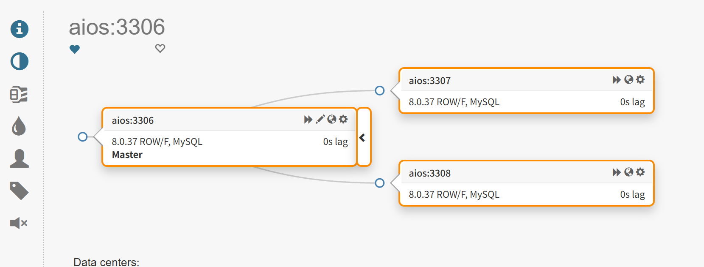

为什么需要高可用？ #
规模越大、业务越关键，单点故障带来的代价越难以承受。单台数据库实例，无论硬件多可靠，故障是必然会发生的：磁盘损坏、内存故障、机房断电、误操作,这些都可能让这台唯一的主库瞬间不可用。
如果不使用高可用架构，那么RPO和RTO都无法保证。必须要有自动化的、即时的高可用方案，来将「数据丢失」和「恢复时间」保证在可控范围。
搭建结构 #
这里使用一个简单的高可用方案：
| 角色 | 最少机器数量 | 高可用的说明 |
|---|---|---|
| 基于GTID异步复制的MySQL一主两从 | 至少 3台（每台一个MySQL实例） | mysql1/2/3 分布在不同物理机/可用区，才能真正做到高可用 |
| Orchestrator + 元数据库 | 建议独立 1台（或多台组集群） | Orchestrator自身也建议3节点做Raft集群，避免它自己是单点 |
| ProxySQL | 建议独立 1-2台（多台做负载均衡） | 作为流量入口，也要避免单点故障 |
| 总结 | 最低高可用配置：mysql3台，orch+orch元数据库 1台， ProxySQL1台，至少需要5台。 |
其中：
- 基于GTID异步复制的MySQL一主两从：用GTID简化基于传统位点的主从复制，但是复制本身仍然是异步复制（主库不等从库确认就返回成功），所以RPO较大，没有被GTID解决。可以使用半同步方案来减少这一数据丢失风险。
- Orchestrator 负责拓扑发现、故障检测、候选主库选举和自动切换。
- ProxySQL 提供固定的读写、只读入口，并根据 Orchestrator API 和 MySQL
read_only状态更新路由。
在单机上实现，或者在腾讯云/阿里云的弹性ECS上按小时租，这里我在单机上实现：
| Compose 服务 | 管理地址 | 角色 |
|---|---|---|
| mysql1 | 127.0.0.1:3306 |
master，可写 |
| mysql2 | 127.0.0.1:3307 |
GTID slave 从库，只读 |
| mysql3 | 127.0.0.1:3308 |
GTID slave 从库，只读 |
| orchestrator-db | 127.0.0.1:3309 |
Orchestrator 元数据库 |
| orchestrator | 127.0.0.1:3000 |
拓扑管理、自动故障切换主库 |
| proxysql | 127.0.0.1:6032(管理)/6033(读)/6034(写) |
读写分离和连接路由 |
GTID异步复制的Mysql Replication拓扑 #
二进制安装几个mysql实例：单二进制脚本🔗link
sudo python3 mysql_binary_install.py \
--archive ~/mysql/Notes-Mysql/Mysql-Installer/mysql-8.0.37-linux-glibc2.28-x86_64.tar.xz \
--md5sum 4ef87d5f5160a6565e767ec10002ce74 \
--root-password 'Your@password123' \
--port 3306 \
--bind-address 0.0.0.0 \
--server-id 101 \
--report-host 127.0.0.1 \
--report-port 3306
sudo python3 mysql_binary_install.py \
--archive ~/mysql/Notes-Mysql/Mysql-Installer/mysql-8.0.37-linux-glibc2.28-x86_64.tar.xz \
--md5sum 4ef87d5f5160a6565e767ec10002ce74 \
--root-password 'Your@password123' \
--port 3307 \
--bind-address 0.0.0.0 \
--server-id 102 \
--report-host 127.0.0.1 \
--report-port 3307 \
--datadir /var/lib/mysql-3307 \
--config /etc/my-3307.cnf
sudo python3 mysql_binary_install.py \
--archive ~/mysql/Notes-Mysql/Mysql-Installer/mysql-8.0.37-linux-glibc2.28-x86_64.tar.xz \
--md5sum 4ef87d5f5160a6565e767ec10002ce74 \
--root-password 'Your@password123' \
--port 3308 \
--bind-address 0.0.0.0 \
--server-id 103 \
--report-host 127.0.0.1 \
--report-port 3308 \
--datadir /var/lib/mysql-3308 \
--config /etc/my-3308.cnf
修改3307和3308上的slave配置：
// etc/my-3307.cnf, etc/my-3308.cnf
[mysqld]
read_only = ON
super_read_only = ON
在主库上添加replication账号：
CREATE USER 'repl'@'%' IDENTIFIED BY 'Your@password123';
GRANT REPLICATION SLAVE ON *.* TO 'repl'@'%';
在从库上进行复制配置
# 开启tls
CHANGE REPLICATION SOURCE TO SOURCE_SSL = 1;
# 设置主库
CHANGE REPLICATION SOURCE TO
SOURCE_HOST = '127.0.0.1',
SOURCE_USER = 'repl',
SOURCE_PASSWORD = 'Your@password123',
SOURCE_PORT = 3306,
SOURCE_AUTO_POSITION = 1;
# 作为主从的 从节点
START REPLICA;
#
SHOW REPLICA STATUS\G
此时主从搭建完成，等待主从同步结束，两个slave 3307和3308上面也有了replication的账号。
Orchestrator #
个人还是推荐docker安装，本地部署需要查不少手册，有点累。
安装
wget https://github.com/openark/orchestrator/releases/download/v3.2.6/orchestrator_3.2.6_amd64.deb
dpkg -i ...
dpkg -r orchestrator
安装目录
安装目录：/usr/local/orchestrator
/usr/local/orchestrator/
├── orchestrator # 主程序二进制（19MB，2021-07-27）
├── orchestrator-sample.conf.json
├── orchestrator-sample-sqlite.conf.json
└── resources/
├── bin/orchestrator-client # 客户端脚本
├── templates/ # Web UI 模板
├── public/ # 前端 js/css/图片
├── metrics/orchestrator-grafana.json
└── pseudo-gtid/
配置/etc/orchestrator.conf.json
{
"Debug": false,
"ListenAddress": ":3000",
"MySQLOrchestratorHost": "127.0.0.1",
"MySQLOrchestratorPort": 3306,
"MySQLOrchestratorDatabase": "orchestrator",
"MySQLOrchestratorUser": "orch_backend",
"MySQLOrchestratorPassword": "orch_backend_pass",
"MySQLTopologyUser": "orch_topo",
"MySQLTopologyPassword": "orch_topo_pass",
"InstancePollSeconds": 5,
"DiscoverByShowSlaveHosts": true,
"UnseenInstanceForgetHours": 240,
"RecoveryPeriodBlockSeconds": 3600,
"RecoverMasterClusterFilters": ["*"],
"PromotionIgnoreHostnameFilters": [],
}
创建orch元数据库
sudo python3 mysql_binary_install.py \
--archive ~/mysql/Notes-Mysql/Mysql-Installer/mysql-8.0.37-linux-glibc2.28-x86_64.tar.xz \
--md5sum 4ef87d5f5160a6565e767ec10002ce74 \
--root-password 'Your@password123' \
--port 3309 \
--bind-address 0.0.0.0 \
--server-id 104 \
--report-host 127.0.0.1 \
--report-port 3309 \
--basedir /usr/local/mysql \
--datadir /var/lib/mysql-3309 \
--config /etc/my-3309.cnf
alias mysql3309='/usr/local/mysql/bin/mysql -uroot -h127.0.0.1 -P3309 -pYour@password123'
在主库上创建mysql用户，通过replication复制到从库上：
CREATE USER 'orch_topo'@'127.0.0.1' IDENTIFIED BY 'orch_topo_pass';
GRANT PROCESS, REPLICATION SLAVE, REPLICATION CLIENT, RELOAD ON *.* TO 'orch_topo'@'127.0.0.1';
GRANT REPLICATION_SLAVE_ADMIN, GROUP_REPLICATION_ADMIN ON *.* TO 'orch_topo'@'127.0.0.1';
在从库上select user, host, plugin from mysql.user;做验证。
在orch元数据库上创建用户
CREATE USER 'orch_backend'@'127.0.0.1' IDENTIFIED BY 'orch_backend_pass';
CREATE DATABASE IF NOT EXISTS orchestrator;
GRANT ALL ON orchestrator.* TO 'orch_backend'@'127.0.0.1';
进行orch发现
curl -s "http://127.0.0.1:3000/api/discover/127.0.0.1/3306"
有：

可以手动测试下故障切换
systemctl stop mysqld
停止3306后 3308自动提升为主库，自动切主的时候将新主库的两个read_only修改为false。
mysql> SELECT VARIABLE_NAME, VARIABLE_VALUE
-> FROM performance_schema.global_variables
-> WHERE VARIABLE_NAME IN ('read_only', 'super_read_only');
+-----------------+----------------+
| VARIABLE_NAME | VARIABLE_VALUE |
+-----------------+----------------+
| read_only | OFF |
| super_read_only | OFF |
+-----------------+----------------+
2 rows in set (0.00 sec)
mysql> SHOW global VARIABLES LIKE '%read_only';
+-----------------------+-------+
| Variable_name | Value |
+-----------------------+-------+
| innodb_read_only | OFF |
| read_only | OFF |
| super_read_only | OFF |
| transaction_read_only | OFF |
+-----------------------+-------+
4 rows in set (0.01 sec)
proxySQL #
用于分流的工具，提供固定的读写、只读入口，并根据 Orchestrator API 和 MySQL read_only 状态更新路由。
在故障切换的时候，自动切换可写主库，在应用层我们只需要填写两个东西：读写url+用户名密码、只读url+用户名密码。
需要在orchestrator 配置的json中添加钩子：
{
"PostMasterFailoverProcesses": [
"curl -fsS -X POST http://proxy-sync:8080/sync >/dev/null 2>&1 || true",
"echo 'Master failover complete: {failedHost}:{failedPort} -> {successorHost}:{successorPort}' >> /tmp/recovery.log"
],
"PostIntermediateMasterFailoverProcesses": [
"curl -fsS -X POST http://proxy-sync:8080/sync >/dev/null 2>&1 || true",
"echo 'Intermediate master failover complete: {failedHost}:{failedPort} -> {successorHost}:{successorPort}' >> /tmp/recovery.log"
],
"PostGracefulTakeoverProcesses": [
"curl -fsS -X POST http://proxy-sync:8080/sync >/dev/null 2>&1 || true",
"echo 'Graceful takeover complete: {failedHost}:{failedPort} -> {successorHost}:{successorPort}' >> /tmp/recovery.log"
],
}
这块要记录的内容比较多，有时间以后再写。